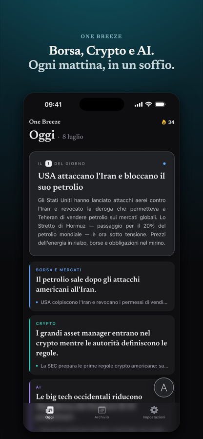

Le notizie del giorno,
in un soffio.
Ogni mattina l'essenziale di Borsa, Crypto e Intelligenza Artificiale. Lo leggi in due minuti e sei in pari.
Una sola notifica al giorno, verso le sei. Poi l'app tace.
Gratis. Senza account, senza pubblicità.
